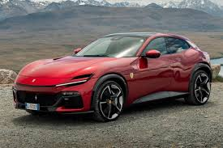
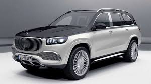
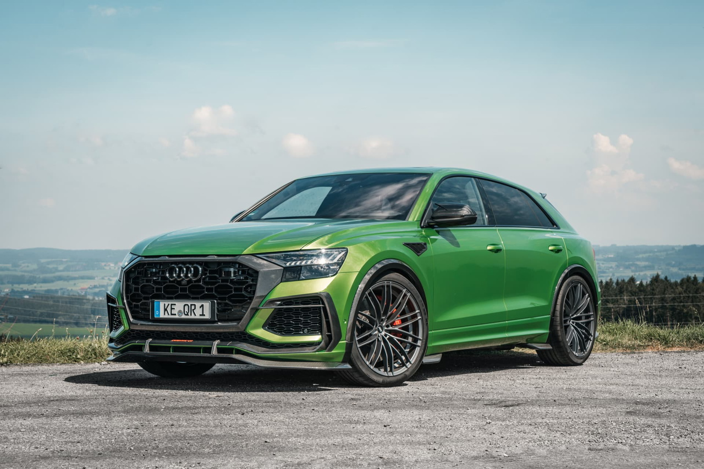
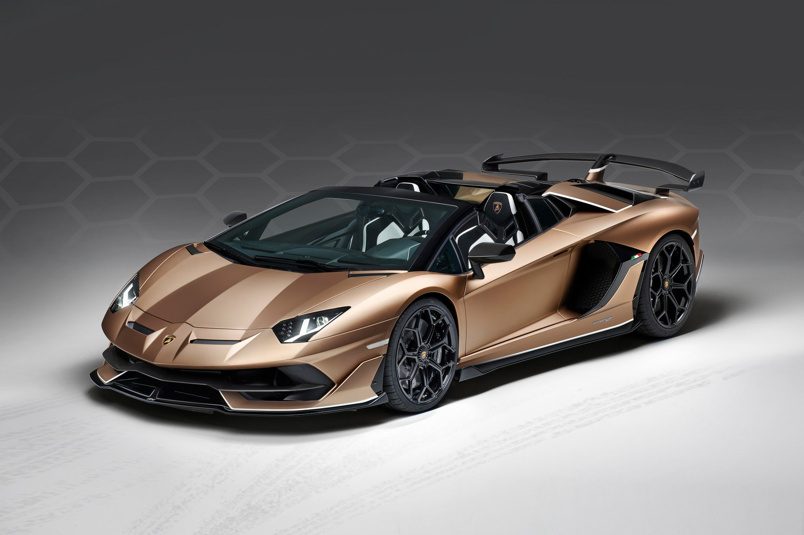
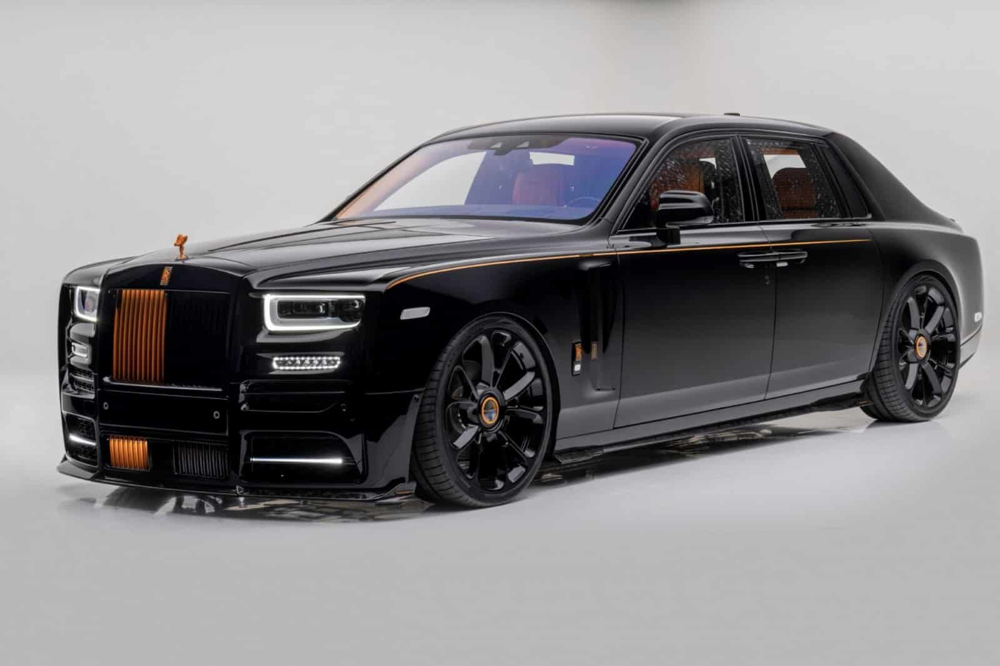
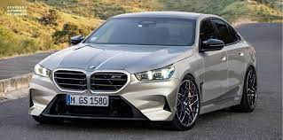

Ferrari Purosangue
Primer modelo 4 puertas de la marca italiana. Destaca por su apariencia de SUV con sus 725 CV bajo el capó.
Primer modelo 4 puertas de la marca italiana. Destaca por su apariencia de SUV con sus 725 CV bajo el capó.
Superdeportivo ligero de alto rendimiento. Monta un motor V8 biturbo de 4.0 litros que produce 765 CV a tracción trasera.
Hiperdeportivo de edición limitada, basado en su antecesor, el Bugatti Chiron. Monta un motor W16 de 8.0 litros con 4 turbos, dando la friolera de 1500 CV.
El SUV de lujo por excelencia monta un motor V8 biturbo que entrega 550 CV. Destaca por su lujoso interior. Es el SUV deportivo de la marca Audi. Combina rendimiento con practicidad. Entrega 640 CV con su motor V8 biturbo de 4.0 litros. Es la versión de alto rendimiento de su antecesor Aventador. Con su motor V12 atmosférico de 6.5 litros, ofrece unos 770 CV. Su carrocería está fabricada enteramente en fibra de carbono. Es el deportivo de alta gama por excelencia de la marca. Monta un motor bóxer atmosférico de 6 cilindros que ofrece hasya 525 CV. Es la berlina de lujo denominada "el buque insignia" de la marca británica. Es conocido por su confort y lujo extremo. Es la versión de alto rendimiento del sedán serie 5 de la marca. Ofrece 635 CV montando un motor V8 biturbo de 4.4 litros. Es el sucesor del Ferrari Enzo. Edición limitada.Mercedes Maybach GLS

Audi RSQ8

Lamborghini Aventador SVJ

Porsche 911 GT3 RS

Rolls Royce Phantom

BMW M5 CS

Ferrari LaFerrari

| LuxuryCars | |||
|---|---|---|---|
| Servicio | Descripción | Tiempo aproximado1 | Precio1 |
| Cambio de neumáticos | Sustitución de neumáticos desgastados por unos nuevos. | 30-45 minutos | 100€ |
| Mantenimiento básico | Cambio de aceite, filtro de aire y revisión general. | 150€ | |
| Revisión completa | Inspección detallada de todos los sistemas del vehículo. | 3-4 horas | 300€ |
| Reparación de frenos | Sustitución de pastillas y discos de freno. | 2-3 horas | 250€ |
| Alineación y balanceo | Ajuste de la geometría de las ruedas para un mejor rendimiento. | 1 hora | 80€ |
| Diagnóstico electrónico | Escaneo de sistemas electrónicos para detectar fallos. | 30 minutos | |
| Servicio de lavado y detallado | Limpieza profunda del interior y exterior del vehículo. | 2-3 horas | 120€ |
| Reparación de carrocería | Reparación de abolladuras, rayones y pintura. | Varía según el daño | Desde 200€ |
| Nota1: El tiempo estimado y el precio pueden variar según la demanda que tenga el taller en su momento. Recomendamos llamar para verificar disponibilidad. | |||